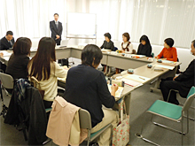

|
|
■議 題  「食の安全・安心につながるHACCP」 講師：（財）食品産業センター技術環境部 ＜講師あいさつ＞消費者のHACCP手法の認知度向 上を図り、普及と調査等を目的に実施しています。
・安心：心配でないこと(感情、個人的） ・安全：危険でないこと(事実、客観的） ・食品企業が目指すことについて 勘・経験による管理(特定の人しかできない)から科学的・技術的な管理(HACCP方式、誰でもできる)をめざしています。それは消費者に安心を提供することになります。 ・日本におけるHACCP認証制度～乳・乳製品・清涼飲料水・食肉製品・魚肉練品・容器包装詰加圧加熱殺菌食品の6食品カテゴリーのみで行います。 ・「埼玉県食品衛生自主管理優良施設確認制度」の認定数は239(H23.8.5） ・ISO22000：食品安全マネージメントシステム(造る・運ぶ・保管など全て） ・重要管理点：集中的・厳密な管理により出荷される全ての食品の安全を保証しています。 ・食中毒予防の3原則…食中毒菌を付けない、増やさない、やっつける。 |